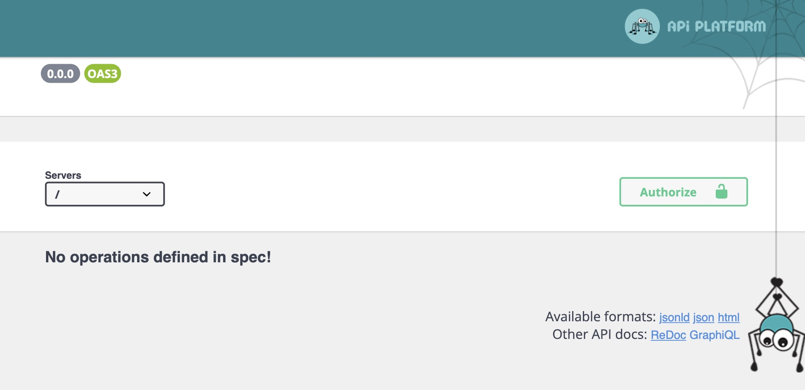

The story of API Platform is a story of standards. Some would say it is best-in-class API framework! It is a stand-alone library in the PHP flora, and is a popular pairing with Symfony projects. In this article we will discover what API Platform is, from initial setup to basic usage. Let's tickle some endpoints!
REST is for data what SOAP is for dirt.
Dave Winer, pioneer of web services (including SOAP)
A RESTful API is the starting point for any API Framework project. While GraphQL may be related to REST the way that REST was to SOAP, RESTful API:s are still popular. And in fact, API Platform supports both. So let's get acquainted with this PHP library!
The setup
We will leverage Symfony for building APIs. As API Platform is paired with Symfony the same way that wine and cheese is, this will be our starting point:
composer create-project symfony/skeleton:"6.2.*" apiplatform
Symfony loves to make a developer's life easy, something called symfony/flex has been installed for us, so we can move
in to the project directory (cd apiplatform) and install API Platform: composer require api. Not only will this
install API Platform, it also adds some additional configurations such as exposing an api-route, such as /api.
Visiting the api route right now will display an OpenAPI (swagger) UI 👇

We don't do this because it is easy, we do it because we thought it would be easy.
Adding resources
Being a lazy developer, it is nice being spoiled by Symfony. We just saw that we have set up API Platform just by the virtue
of having symfony/flex handling setting up the configurations for us. We also saw that we do not have any resources or
operations available in our API. So would it not be so very endearing to have another tool helping us out here?
Indeed, it would! It is called maker-bundle and it allows us to specify an entity, its fields, and if it should be available
in our API. We install it with symfony require maker (again, symfony/flex allows us to be so incredible lazy as not even
typing out the whole package name).
Once it is installed, we will make use of it with bin/console make:entity to create our first entity: a cassette tape.
It will be called Cassette, it will be exposed in the API, and it will have a single field to start with:
apiplatform ➤ bin/console make:entity
Class name of the entity to create or update (e.g. AgreeableElephant):
> Cassette
Mark this class as an API Platform resource (expose a CRUD API for it) (yes/no) [no]:
> yes
created: src/Entity/Cassette.php
created: src/Repository/CassetteRepository.php
Entity generated! Now lets add some fields!
You can always add more fields later manually or by re-running this command.
New property name (press <return> to stop adding fields):
> title
Field type (enter ? to see all types) [string]:
>
Field length [255]:
>
Can this field be null in the database (nullable) (yes/no) [no]:
>
updated: src/Entity/Cassette.php
Add another property? Enter the property name (or press <return> to stop adding fields):
>
Success!
Next: When you are ready, create a migration with php bin/console make:migration
We are about to start using a database. Our basic project comes with a Docker Compose setup configured to run a
PostgreSQL database, so let's get the container started: docker-compose up -d
Alternatively we can switch the database to a MariaDB from the comfort of the CLI:
bin/console make:docker:database
Our next task is to make a migration file. This will contain our Entity schema and will be available at ./migrations/. We create it with:
symfony php bin/console make:migration
symfonyis a CLI-tool that in this context will infer docker environments for us, such as database connection details. Without it, you would get a "connection refused" error until you update your .env-file with the correct connection details.
Having a new migration-file, we will execute it by running symfony php bin/console doctrine:migrations:migrate. If we revisit our /api route, we will see that we have all the possible operations available to us that we might like. Maybe too many? 🤔

You might have noticed a spider in your API. Don't worry, it's just Webby.
Either through an API client like Postman or from the comfort of the browser, API Platform is already allowing us to interact with our defined entity. And we haven't written a line of code yet. Let's give it a try!
Now let's imagine, this is just too much freedom for us. We rather not have all these options, or these vocabularies at our fingertips. Let's say that we never ever want to replace a Cassette; PUT will not be in our API repertoire!
This is our current Cassette entity (previously generated by the make:entity command):
<?php
namespace App\Entity;
use ApiPlatform\Metadata\ApiResource;
use App\Repository\CassetteRepository;
use Doctrine\ORM\Mapping as ORM;
#[ORM\Entity(repositoryClass: CassetteRepository::class)]
#[ApiResource]
class Cassette
{
#[ORM\Id]
#[ORM\GeneratedValue]
#[ORM\Column]
private ?int $id = null;
#[ORM\Column(length: 255)]
private ?string $title = null;
public function getId(): ?int
{
return $this->id;
}
public function getTitle(): ?string
{
return $this->title;
}
public function setTitle(string $title): self
{
$this->title = $title;
return $this;
}
}
We see some metadata about this entity in the form of PHP attributes. We have ORM-mapping in the form of marking the class as an Entity along with which repository it should use. We also see that it is marked as an ApiResource. API Platform will infer all relevant fields to expose and the methods to interact with them. It really wants to help us. But how can we define that API Platform should not have a PUT request available for it?
By expanding the ApiResource attribute with an operations argument we can specify which requests we want to enable for the entity.
<?php
// ...
#[ApiResource(
operations: [
new Get(),
new GetCollection(),
new Post(),
new Delete(),
new Patch()
]
)]
These operations are brought from the ApiPlatform\Metadata namespace and correspond with each type of request we want to enable. We bring in all the operations here but for the PUT operation.
Most of these operations are straight forward, but they hint at something fundamental. There is something called Collection operations, so there are also something called Item operations.
PostochGetCollectionare collection operations. This means that they do not require any item identificator, which Item operations do.
No body puts PUT in a corner!
So a mixtape is not much without any songs. We will create an entity for this and create two collections on Cassette to relate to the songs. It will have a sideA collection of songs, and a sideB collection of songs. We will againg enjoy the ease that is the bin/console make:entity command by adding the following fields:
-
bin/console make:entity Song:- title [
string] - artist [
string] - duration [
integer] (duration in seconds)
- title [
-
update database for the new entity:
symfony php bin/console make:entitysymfony php bin/console doctrine:migrations:migrate
-
bin/console make:entity Cassette(allows us to update its fields):- sideA [
ManyToMany -> Song, no corresponding field onSong] - sideB [
ManyToMany -> Song, no corresponding field onSong]
- sideA [
-
Modify the
ManyToManymapping on Cassette withJoinTable(brought in from theDoctrine\ORM\Mappingnamespace):
#[ORM\ManyToMany(targetEntity: Song::class)]
#[JoinTable(name: 'side_a_songs')]
private Collection $sideA;
#[ORM\ManyToMany(targetEntity: Song::class)]
#[JoinTable(name: 'side_b_songs')]
private Collection $sideB;
- Update the new relations.
symfony php bin/console make:entitysymfony php bin/console doctrine:migrations:migrate
It may be that the new entity has not been marked as an ApiResource, to remedy that we will simply prepend the Song class with the ApiResource attribute. This will again expose all the operations we might want. So taking this opportunity to populate our database with some songs we can make a POST request to https://localhost:8000/api/songs (or whatever port you have your local server running at). May I suggest adding the following payload with the request:
{
"title": "Never Gonna Give You Up",
"artist": "Rick Astley",
"duration": 214
}
After adding a few songs, we can fetch them at https://localhost:8000/api/songs with a GET request. It would return the following response:
{
"@context": "/api/contexts/Song",
"@id": "/api/songs",
"@type": "hydra:Collection",
"hydra:totalItems": 4,
"hydra:member": [
{
"@id": "/api/songs/1",
"@type": "Song",
"id": 1,
"title": "Never Gonna Give You Up",
"artist": "Rick Astley",
"duration": 214
},
{
"@id": "/api/songs/2",
"@type": "Song",
"id": 2,
"title": "If I Could Turn Back Time",
"artist": "Cher",
"duration": 239
},
{
"@id": "/api/songs/3",
"@type": "Song",
"id": 3,
"title": "Walking On Sunshine",
"artist": "Katrina & The Waves",
"duration": 239
},
{
"@id": "/api/songs/4",
"@type": "Song",
"id": 4,
"title": "Like a Virgin",
"artist": "Madonna",
"duration": 219
}
]
}
Perhaps we could improve the response for the songs so we could get duration in a minute:seconds format? We could do that by adding a dynamic field! As long as we use a language that API Platform understands, we won't have to add any special configurations!
Add the following method to App\Entity\Song:
<?php
// ...
public function getFormattedDuration(): ?string
{
$duration = $this->duration ?? 0;
$minutes = $duration > 60 ? (int)($duration / 60) : 0;
$seconds = $duration > 60 ? $duration % 60 : $duration;
return sprintf('%d:%02d', $minutes, $seconds);
}
And just like that we get back the following for the first song:
{
"@id": "/api/songs/14",
"@type": "Song",
"id": 14,
"title": "Never Gonna Give You Up",
"artist": "Rick Astley",
"duration": 214,
"formattedDuration": "3:34"
}
So far, this has been a pleasant journey. But can we add a song at a time to the cassette and get a list of songs from the Cassette resource? This will require a bit more work. While we have an endpoint to setup the whole lists of songs with a one-off PATCH request, we do not have an endpoint to add one song at a time. Another challenge is the nature of cassettes!

A traditional cassette has 2 sides; an A-side and a B-side. Each side can contain upto about 30 minutes of audio. We will add a method called addSong which will add songs to the A-side until it is full and then continue to add to the B-side. We will have a method to calculate the length occupied for each side called totalLength and another method called sideAddable to the Cassette class. We will modify the methods addSideA and addSideB to add the control if it can add another song.
// ./src/Entity/Cassette
<?php
// ...
public function addSong(Song $song): self
{
if (!$this->sideA->contains($song) && $this->sideAddable($song, $this->sideA)) {
$this->addSideA($song);
} else {
$this->addSideB($song);
}
return $this;
}
public function addSideA(Song $song): self
{
if (!$this->sideA->contains($song) && $this->sideAddable($song, $this->sideA)) {
$this->sideA->add($song);
}
return $this;
}
public function addSideB(Song $song): self
{
if (!$this->sideB->contains($song) && $this->sideAddable($song, $this->sideB)) {
$this->sideB->add($song);
}
return $this;
}
/**
* @param Collection<Song> $songs
* @return int
*/
public function totalLength(Collection $songs): int
{
$sum = 0;
foreach ($songs as $song) {
$sum += $song->getDuration() ?? 0;
}
return $sum;
}
protected function sideAddable(Song $candidateSong, Collection $sideSongs): bool
{
$allowedLength = 30 * 60;
return $allowedLength > ($this->totalLength($sideSongs) + $candidateSong->getDuration());
}
We will add a controller to handle when songs are added to a cassette. After this, we will use the controller when we register a new API route. You will see that we pass an EntityManagerInterface to the controller. This will be automaticallly resolved by Symsony's Dependency Injection container. It will be used to loop up the song in the database and store it to a cassette. The controller will return a 201 OK status for successful creation of a new relation, 400 BAD REQUEST for requests without a required body parameter (songId), or 404 NOT FOUND if a song is not found. If you look oveer the class you will see that we don't look up the Cassette to see if it is present. In a __invoke method we assume a cassette has already been found, this means that Symfony in conjunction with the ORM will already have processed the lookup and will handle returning a 404 for us if it was not found.
// ./src/Controller/CassetteSongController.php
<?php
declare(strict_types=1);
namespace App\Controller;
use App\Entity\Cassette;
use App\Entity\Song;
use Doctrine\ORM\EntityManagerInterface;
use Symfony\Bundle\FrameworkBundle\Controller\AbstractController;
use Symfony\Component\HttpFoundation\Request;
use Symfony\Component\HttpFoundation\Response;
class CassetteSongController extends AbstractController
{
public function __construct(
private readonly EntityManagerInterface $entityManager
){}
public function __invoke(Cassette $cassette, Request $request = null): Response
{
if ($request !== null) {
$content = $request->getContent();
$data = json_decode($content, true);
$songId = $data['songId'] ?? false;
if (!$songId) {
return $this->json(
['description' => 'Missing required key "songId"'],
Response::HTTP_BAD_REQUEST
);
}
$songRepository = $this->entityManager->getRepository(Song::class);
$song = $songRepository->findOneBy(['id' => $songId]);
if ($song === null) {
return $this->json(['description' => 'Song was not found'], Response::HTTP_BAD_REQUEST);
}
$cassette = $cassette->addSong($song);
$this->entityManager->flush($cassette);
}
return $this->json(
[
'description' => 'Song was added!',
],
Response::HTTP_CREATED
);
}
}
To be or not to be, that is the question. Well, actually, there are many other questions, like "why that controller though?"

So what to do with that controller? As we see, it will take an instance of the Cassette class and a request object. We will go into the Cassette class and expand the API definitions. This will be less magic (but not totally without some sourcery), and more definitions. We add a new Post-request to the API Resource, define its route, the controller to handle it, and its response values.
<?php
#[ApiResource(
operations: [
// ...
new Post(
uriTemplate: '/cassettes/{id}/songs',
controller: CassetteSongController::class,
openapiContext: [
'summary' => 'Add a Song to a cassette',
'requestBody' => [
'content' => [
'application/json' => [
'schema' => [
'type' => 'object',
'properties' => [
'songId' => [
'type' => 'integer'
]
]
]
]
]
],
'responses' => [
'201' => [
'description' => 'Song added successfully'
],
'400' => [
'description' => 'Missing required key'
],
'404' => [
'description' => 'Cassette or Song not found'
]
]
]
)
]
)]
class Cassette
// ...
In the route for the endpoint we have added a placeholder, {id}. This id corresponds to the Cassette entity we want to add to, and Symfony will fetch the correct one for us and insert into the controller's __invoke method. In the POST body we define the schema to have a songId with an integer. Having added this, we will see a new route and schema for it on localhost:8000/api.
We can now create a Cassette, multiple songs, and add songs to a cassette. Having done that, when we fetch a Cassette with a GET request we will get back the songs it has. But something looks a bit off.
GET https://127.0.0.1:8000/api/cassettes/1
{
"@context": "/api/contexts/Cassette",
"@id": "/api/cassettes/1",
"@type": "Cassette",
"id": 1,
"title": "Mix Tape #1",
"sideA": [
"/api/songs/1",
"/api/songs/2",
"/api/songs/3",
"/api/songs/4",
"/api/songs/5",
"/api/songs/6",
"/api/songs/7",
"/api/songs/8"
],
"sideB": [
"/api/songs/10",
"/api/songs/11",
"/api/songs/12",
"/api/songs/13",
"/api/songs/14"
]
}
We can see that we have 8 songs on side A, and 5 on side B. But we would like to get the song, artist, and duration for each. So what are these strings we get? It looks like URLs, and while they functions as this too they are API Platform's way to identify each entity, or IRIs (International Resource Identifiers).
We will modify how API Platform returns the songs when we fetch a cassette. We will do this by defining a normalization-group in Cassette and map the Song class to also use this group.
// ./src/Entity/Cassette
<?php
// ...
use Symfony\Component\Serializer\Annotation\Groups;
// ...
#[ApiResource(
// ...
normalizationContext: [
'groups' => ['read:cassette']
]
)]
class Cassette
{
// ...
// add this group to the fields you want to expose in the API
#[Groups(['read:cassette'])]
private ?string $title = null;
// ...
#[Groups(['read:cassette'])]
private Collection $sideA;
// ...
#[Groups(['read:cassette'])]
private Collection $sideB;
// ...
}
And for the magic of it all we will add this group in the Song class as well.
// ./src/Entity/Song
<?php
use Symfony\Component\Serializer\Annotation\Groups;
// ...
#[Groups(['read:cassette'])]
private ?string $title = null;
#[Groups(['read:cassette'])]
private ?string $artist = null;
// ...
#[Groups(['read:cassette'])]
public function getFormattedDuration(): ?string
{
// ...
}
So we did something odd here. We use a normalization-group defined in another API Resource and add it to the fields of the Song class. How would this ever be enough to get the behaviour that we want? The answer is magic! Or, serialization process, you can read more about that in API Platform's documention. This is the result:
{
"@context": "/api/contexts/Cassette",
"@id": "/api/cassettes/1",
"@type": "Cassette",
"title": "Mix Tape #1",
"sideA": [
{
"@id": "/api/songs/1",
"@type": "Song",
"title": "Never Gonna Give You Up",
"artist": "Rick Astley",
"formattedDuration": "3:34"
},
{
"@id": "/api/songs/2",
"@type": "Song",
"title": "If I Could Turn Back Time",
"artist": "Cher",
"formattedDuration": "3:59"
},
// ...
]
// ...
}
And that is exactly what we were working towards! But we have only been scratching the surface of API Platform. There are many other topics to discover, such as:
- RESTful to GraphQL
- Securing resources and operations
- The Admin component
- Filters
- ...and so much more!
What thou seest is but the shadow of the truth; the substance lies beneath, and thou must scratch the surface to reveal it. But scratch not with thy nails, but with thy vinyl records!